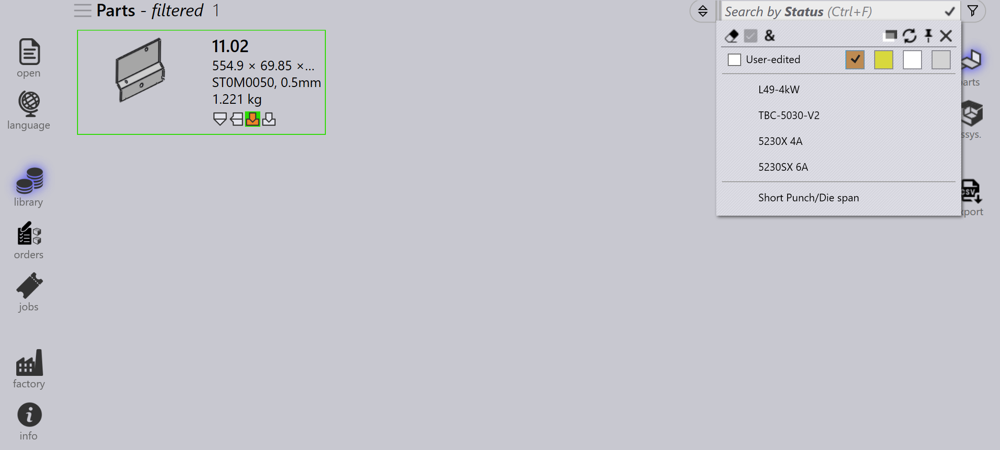

Parça filtreleri
Parça Kitaplığı Filtreleri, belirli koşullar uygulayarak kitaplıktaki parçaları hızlıca aramamanıza ve bulmanıza olanak tanır. Sonuçları yalnızca ölçütlerinizi karşılayan parçalarla daraltarak, bu filtreler ilgili parçaları verimli bir şekilde yönetmeyi ve bunlara erişmeyi kolaylaştırır.

State
-
Parçaları güncel durumlarına göre aramak için State filtresini kullanın.
-
Açılır menü, kullanılabilir kitaplık parçalarına bağlı olarak geçerli tüm durumları görüntüler.
-
Durumların listesi, seçilen parçalara ve durumlarına göre dinamik olarak değişir.
-
Örneğin, çözülmemiş malzeme durumundaki parçaları görüntülemek için Material Missing öğesini seçin.

Status
-
Parçaları tooling durumuna göre aramak için Status filtresini kullanın.
-
Açılır menü, tooling durumlarını renkli kutular olarak ve kullanılabilir tüm makineleri ve bunlara ait geçerli hataları görüntüler.
-
Renkli kutular aşağıdaki durumları temsil eder:
-
Beyaz: Tooling OK
-
Turuncu: Tooling’de hata var
-
Sarı: Tooling’de uyarı var
-
Gri: Tooling bastırılmış
-
-
Bir parçada dar flanş veya tooling atanmamış hataları varsa, bunları seçmek ilgili parçaları görüntüler.

-
Seçilen makinede bastırılmış tooling’e sahip parçalar, gri renkli kutuya tıklanarak görüntülenir.
Bend mounts
-
Parçaları kullanılan büküm takımına göre aramak için Bend mounts filtresini kullanın.
-
Açılır menü kullanılabilir tüm büküm takımlarını gösterir ve takım adına, türüne (zımba, gooseneck, radius vb.) veya açıklamasına göre filtrelenebilir.
-
Birden fazla takım seçin ve seçilen takımların her ikisini de kullanan takımları sıralamak için Match all öğesine tıklayın.